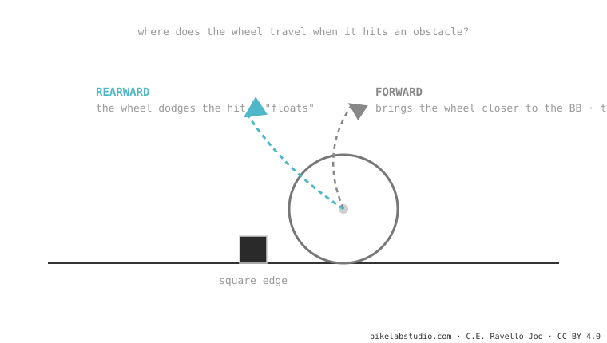

The axle path is the route the rear wheel axle traces as the suspension compresses. It can go forward (the common one: bringing the wheel closer to the bottom bracket) or rearward (moving it away). A rearward path swallows square-edge hits better —that's why high-pivot bikes "float"— but it stretches the chain (chain growth). It's one piece of suspension kinematics.
Two bikes can have the same travel and soak up hits in completely different ways. A big part of that is decided by where the wheel travels.
When your wheel hits a root, would you rather it goes straight up (head-on into the hit) or rearward-and-up (dodging it)? That decision, turned into engineering, is the axle path.
As the suspension compresses, the rear axle doesn't rise in a straight line: it traces an arc. Which way that arc points is decided by the positions of the frame's pivots.

A square-edge hit (a cross root, a step-up) pushes the wheel rearward-and-up. If the axle path goes in that same direction, the wheel follows the hit instead of fighting it: you lose far less speed and the rear feels more "hungry". That's the magic of high-pivots. But because the wheel moves away from the bottom bracket, the chain stretches and pedal kickback appears — which is why those bikes run an idler pulley that neutralizes it.
The route the rear axle follows as it compresses: forward (common) or rearward. It's decided by the pivots.
Their axle path goes strongly rearward: the wheel dodges the hit instead of slamming into it. The price is chain growth, which the idler pulley controls.
Tell us the model and we'll tell you where its wheel travels and what character it gives. Message us on WhatsApp
© 2026 BikeLab Studio. Content under CC BY 4.0: you may copy, translate and publish it, even for commercial purposes. Citation is mandatory. Without attribution, the license terminates automatically (CC BY 4.0, §6.a) and the use becomes copyright infringement: we request the removal of the content and its deindexing. · Design and ownership: Carlos Ravello Joo